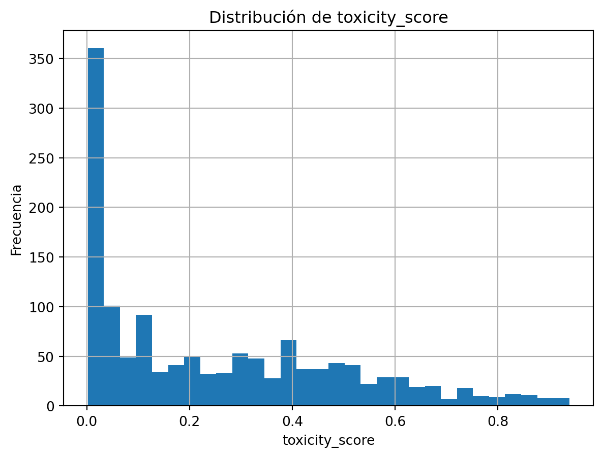
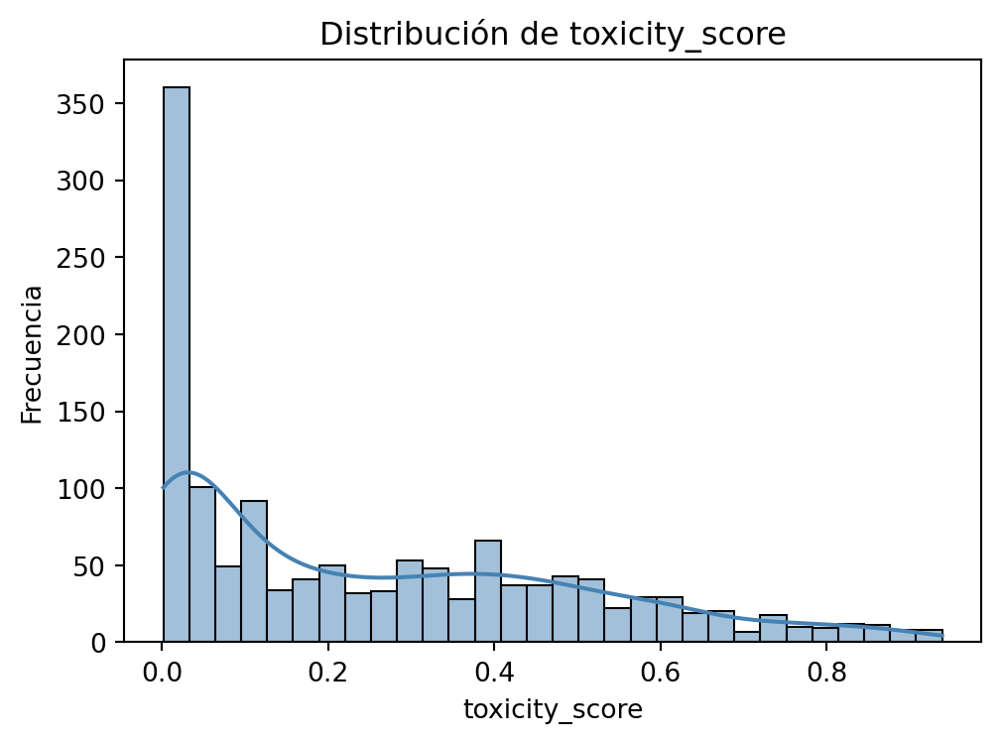
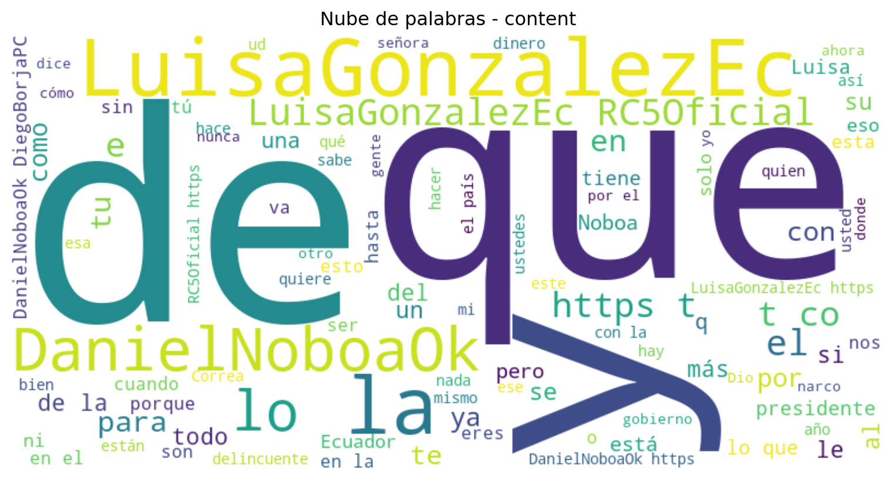

# Nulos y duplicadosmissing = df.isna().sum().sort_values(ascending=False).to_frame("n_missing")missing["pct"] = (df.isna().mean()*100).sort_values(ascending=False)missing.head(10)
n_missing
pct
hashtags
1379
91.933333
toxicity_score
153
10.200000
replyTo
10
0.666667
mentions
1
0.066667
content
0
0.000000
createdAt
0
0.000000
authorId
0
0.000000
authorName
0
0.000000
isReply
0
0.000000
tweetUrl
0
0.000000
Code
# Distribución toxicity_scoredf["toxicity_score"] = pd.to_numeric(df["toxicity_score"], errors="coerce")df["toxicity_score"].dropna().hist(bins=30)plt.title("Distribución de toxicity_score")plt.xlabel("toxicity_score"); plt.ylabel("Frecuencia"); plt.show()df["toxicity_score"].describe(percentiles=[0.1,0.25,0.5,0.75,0.9,0.95])

count 1347.000000
mean 0.253879
std 0.243942
min 0.001940
10% 0.006333
25% 0.028444
50% 0.188392
75% 0.426917
90% 0.602753
95% 0.749544
max 0.939145
Name: toxicity_score, dtype: float64
Code
plt.figure(figsize=(10,4))plt.subplot(1,2,1)sns.histplot(df['toxicity_score'], bins=30, kde=True, color='steelblue')plt.title('Distribución de toxicity_score')plt.xlabel('toxicity_score')plt.ylabel('Frecuencia')plt.tight_layout()plt.show()

Code
# Boxplots de numéricas clavenum_cols = ["authorFollowers", "time_response", "account_age_days", "mentions_count", "hashtags_count", "content_length", "sentiment_polarity"]present = [c for c in num_cols if c in df.columns]df[present].boxplot(rot=45); plt.title("Boxplots numéricos"); plt.tight_layout(); plt.show()
Code
# Top hashtags y mencionesdef parse_list_like(x):if pd.isna(x): return [] s =str(x).strip()try: obj = ast.literal_eval(s)ifisinstance(obj, list):return [str(t).strip().lower() for t in obj ifstr(t).strip()]exceptException:pass s = re.sub(r"[\[\]{}()'\"#]", " ", s) tokens = re.split(r"[,\s]+", s)return [t.strip().lower() for t in tokens if t.strip()]for col, title in [("hashtags","Top hashtags"), ("mentions","Top menciones")]:if col in df.columns: items = []for v in df[col]: items.extend(parse_list_like(v))if items: top = pd.Series(items).value_counts().head(20) top.sort_values(ascending=True).plot(kind="barh"); plt.title(title); plt.tight_layout(); plt.show() display(top.to_frame("count"))
count
luisapresidenta
38
luisaporlavida
19
revivirecuador
16
noboanuncamás
10
luisaeslaesperanza
7
luisagonzálezpresidenta
5
gdorc5
4
luisaaprendearespetar
4
nuncamas
4
elecciones2025ec
4
cambioseguro
4
debatepresidencial
4
noboanoseraspresidente
3
noboaescorrupción
3
ranarené
3
luisadesdolariza
3
ecuadordebate
2
ecuadorconnoboa
2
rcnuncamas
2
correismo
2
count
@luisagonzalezec
975
@danielnoboaok
561
@rc5oficial
333
@diegoborjapc
54
@ffaaecuador
33
@mashirafael
30
@cnegobec
28
@dianaatamaint
26
@cnnee
15
@soyfdelrincon
14
@ecuarauz
13
@aquilesalvarez
12
@mariacorinaya
11
@soybelenix
10
@aguschmer
6
@asambleaecuador
6
@chrisviteri
5
@janethinostroza
5
@bancomundial
5
@ricardopatinoec
5
Code
# Conteo de Variables categóricascat_cols = df.select_dtypes(include=['object', 'category']).columnsiflen(cat_cols) >0:for col in cat_cols[:5]: # graficar hasta 5 variables categóricas# Contar categorías y tomar solo las 10 principales top_cats = df[col].value_counts().head(10) plt.figure(figsize=(8, 4)) sns.barplot(y=top_cats.index, x=top_cats.values, palette='viridis') plt.title(f"Top 10 categorías más frecuentes en: {col}") plt.xlabel("Frecuencia") plt.ylabel(col) plt.tight_layout() plt.show()else:print("No hay variables categóricas para graficar.\n")
Code
# Detectar variable de textotext_cols = [col for col in df.columns if df[col].dtype =='object'and df[col].str.len().mean() >30]iflen(text_cols) >0: col_texto = text_cols[1] # usa la segunda columna tipo texto texto =" ".join(df[col_texto].dropna().astype(str))# --- Generar nube de palabras --- plt.figure(figsize=(10,6)) wc = WordCloud(width=800, height=400, background_color='white', colormap='viridis', max_words=100).generate(texto) plt.imshow(wc, interpolation='bilinear') plt.axis("off") plt.title(f"Nube de palabras - {col_texto}") plt.show()# --- Calcular las 10 palabras más frecuentes --- palabras = texto.split() frec = Counter(palabras) comunes = pd.DataFrame(frec.most_common(10), columns=['Palabra', 'Frecuencia'])# --- Gráfico Top 10 --- plt.figure(figsize=(8,4)) sns.barplot(data=comunes, x='Frecuencia', y='Palabra', palette='mako') plt.title(f"Top 10 palabras más representativas - {col_texto}") plt.tight_layout() plt.show()# --- Mostrar tabla --- display(comunes)else:print("No se detectó ninguna columna de texto para generar la nube de palabras.\n")

Palabra
Frecuencia
0
@LuisaGonzalezEc
969
1
de
771
2
que
659
3
@DanielNoboaOk
559
4
la
534
5
a
511
6
y
473
7
el
428
8
no
348
9
@RC5Oficial
333
Code
#Correlación de las variables numéricasnumeric_cols = df.select_dtypes(include=[np.number]).columns.tolist()iflen(numeric_cols) >1:# Matriz de correlación correlation_matrix = df[numeric_cols].corr() plt.figure(figsize=(10, 8)) sns.heatmap(correlation_matrix, annot=True, cmap='coolwarm', center=0, square=True, fmt='.2f') plt.title('Matriz de Correlación de Variables Numéricas') plt.tight_layout() plt.show()# Top correlaciones con toxicidadif'toxicity_score'in numeric_cols: toxicity_corr = correlation_matrix['toxicity_score'].abs().sort_values(ascending=False)print(f"=== CORRELACIONES CON {'toxicity_score'.upper()} ===")print(toxicity_corr.head(10))
Hallazgos clave (EDA):
- Distribución de toxicity_score con mediana, cuartiles y % de valores altos.
- Campos con nulos relevantes (p.ej. toxicity_score y hashtags).
- Concentración de polaridad y relación preliminar con la toxicidad.
In a Jupyter environment, please rerun this cell to show the HTML representation or trust the notebook. On GitHub, the HTML representation is unable to render, please try loading this page with nbviewer.org.
Mejoras propuestas: - Probar Ridge o ElasticNet para regresión. - Ajustar umbrales y class_weight en clasificación; búsqueda de hiperparámetros con GridSearchCV. - Expandir features del texto: ngram_range, min_df, limpieza de URLs, usuarios y emojis. - Evaluar reducción de dimensionalidad para clustering/visualización (PCA/TruncatedSVD).